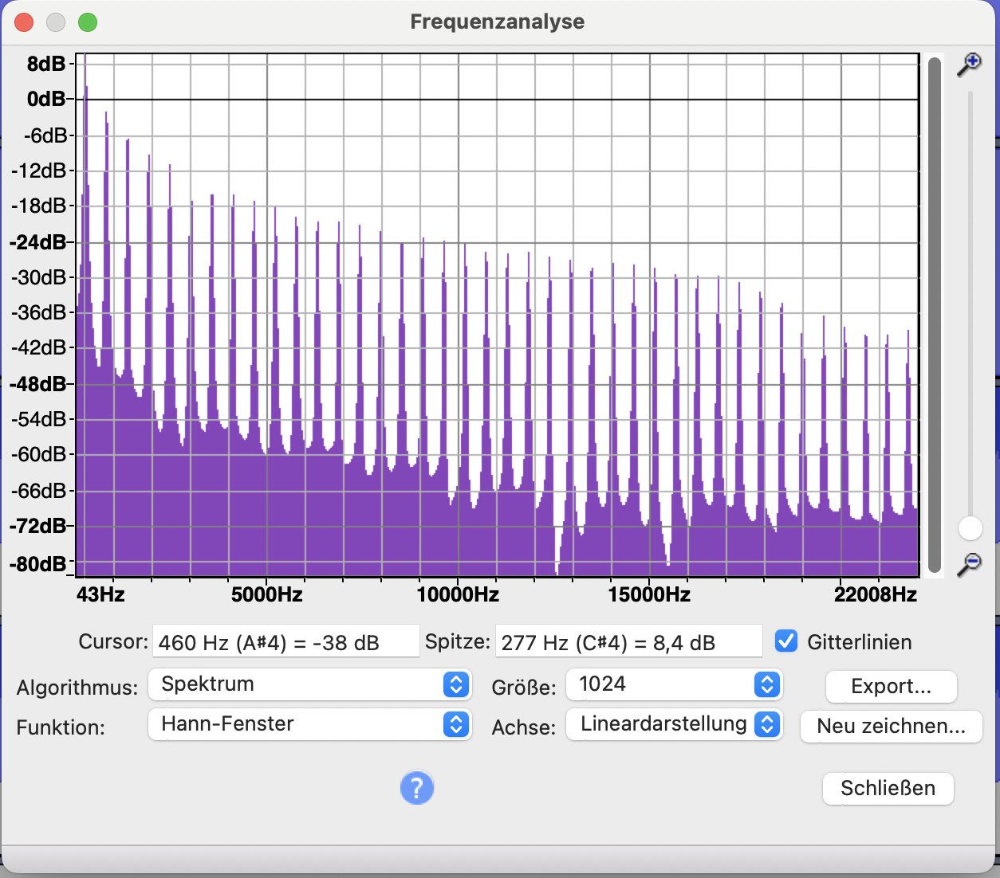
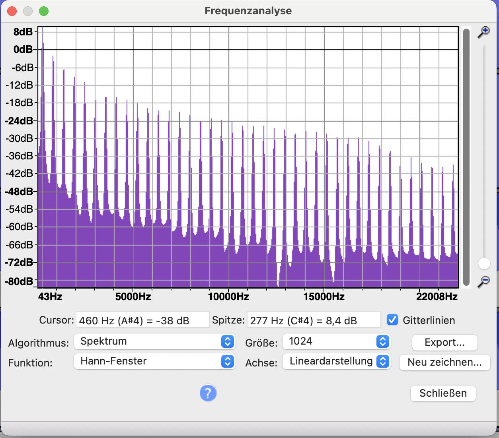
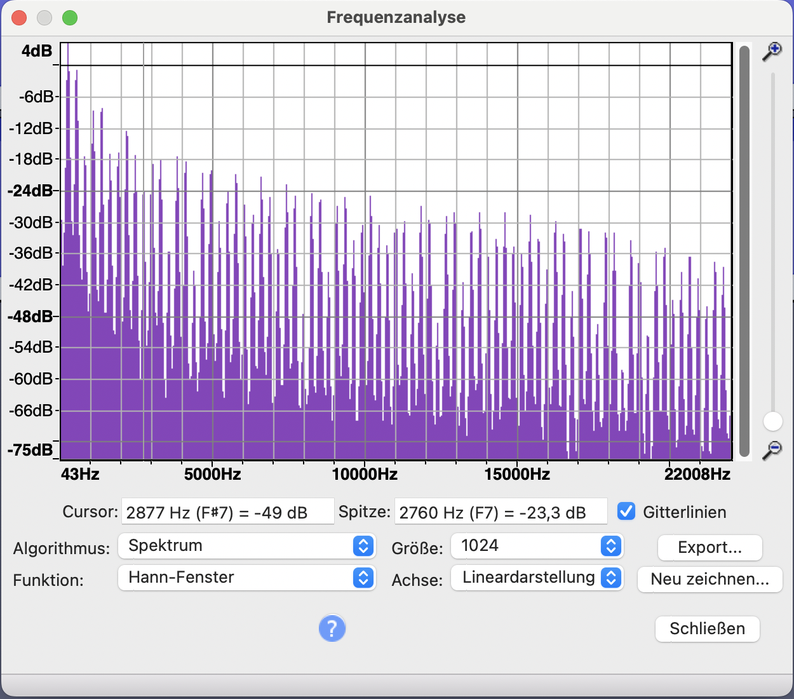
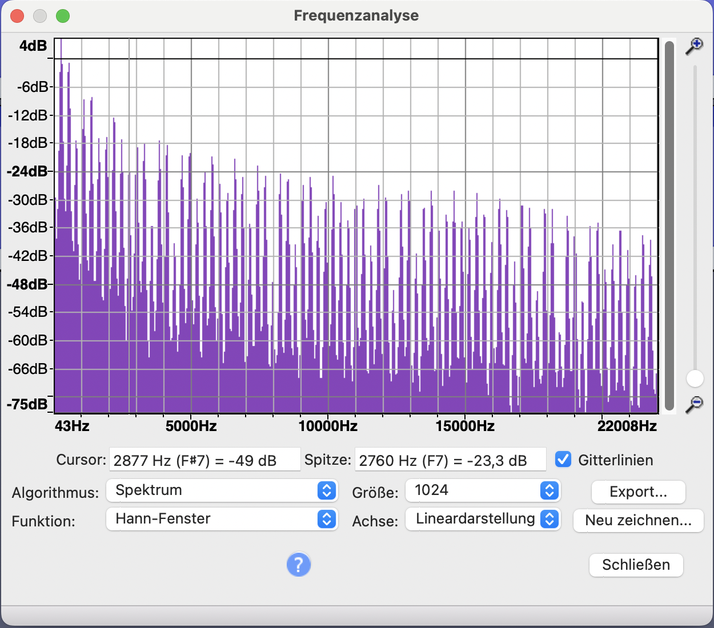

Grundton "A" (Ton von der Taste "N" )
Triangle
| 1 | 2 | 3 | 4 | |
|---|---|---|---|---|
| dB | 84 | 65 | 56 | 50 |
| Hz | 176,79 | 531,75 | 886,72 | 1241,68 |
| Differenz | -19 | -28 | -34 | |
| % |
Square
| 1 | 2 | 3 | 4 | |
|---|---|---|---|---|
| dB | 89,8 | 80,2 | 76 | 73 |
| Hz | 176 | 532 | 885 | 1243 |
| Differenz | -9,6 | -13,8 | -16,8 | |
| % |
Saw
| 1 | 2 | 3 | 4 | |
|---|---|---|---|---|
| dB | 82 | 77 | 72,5 | 71 |
| Hz | 176 | 355 | 533 | 710 |
| Differenz | -5 | -9,5 | -11 | |
| % |
Veränderung der Grundschwingung (Square)
Verhältnis zwischen positivem und negativem Schwingungsteil, beobachtet an drei Fälle: 50/50, 30/70 und 10/90.
Verhältnis zwischen positivem und negativem Schwingungsteil, beobachtet an drei Fälle: 50/50, 30/70 und 10/90.
Square 50/50
50.453% 
50.453% 
Square 30/70
30.407% 
30.407% 
Square 10/90
10.022%
10.022%
Saw 50/50
50.453%
50.453%
Saw 30/70
30.407%
30.407%
Saw 10/90
10.022%
10.022%
Triangle 50/50
50.453%
50.453%
Triangle 30/70
30.407%
30.407%
Triangle 10/90
10.022%
10.022%